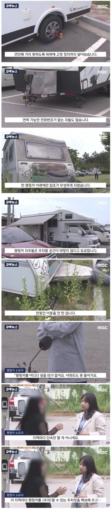

왜 산거지 그럼..?

왜 산거지 그럼..?
내 지인이 캠핑카 소유했었는데
캠핑카 가지고 있으면서 딱 두번 행복했데
1. 샀을 때
2. 팔렸을 때
ㅋㅋㅋㅋㅋ
이혼한사람이랑 비슷한데
결혼했을때
이혼했을때
캠핑카는 와이프라는 소리구나
차고지 없이 일다 차 사고 길바닥에 주차하는 놈들이랑 똑같은 거지
same 거지

캠핑 자체를 좋아하지 않지만 캠핑문화가 한국에서는 조금 골때리기도 하다고 생각함.
캠핑존이 다 정해져있고 그 구역에서만 캠핑이 가능한데, 안전문제, 환경문제 생각하면 이게 당연하긴 한데....
그걸 또 조금 생각해보면, 이러면 캠핑의 의미가 뭔가? 싶기도 함. 완벽히 정해진 곳에서 의도적으로 불편을 겪는건가?
ㄹㅇ 잘 닦여진 사이트에 성냥갑마냥 줄맞춰서 텐트치고 캠핑이라고 하는거 보면 뭔가 뭔가긴함ㅋㅋ
난민체험....
ㄹㅇㅋㅋ 캠핑이라면 자고로 숲속을 거닐다가 삘받는 곳에 텐트 치고 캠프파이어 피우고 괴기꿉고 해줘야 되는데 한국에서는 숲이나 산들 대부분 주인 있고 야외취사는 거진 불법이지 한국은 캠핑족을 위한 나라가 아니다
근데 우리나라에 저런 캠핑카로 캠핑 즐길곳이 얼마나 있다고 캠핑카를 사냐ㅋㅋ
목 좋은 곳은 이미 캠핑장 들어차있고, 오지 탐험이 가능한 땅덩이도 아닌데 저걸 사서 도대체 어따쓰냐
대학원생의 든든한 동반자
우리나라 아직까지 오지 존나 많음.
도로가 워낙 잘 되 있어서 가끔 망각하는데
국토의 70퍼가 산지임.
아파트 살 거면 웬만하면 차폭 넓은 특대형 픽업트럭이나 캠핑카는 자연스레 마음 접어야 하는 거 아니냐?
들어갈 장소는 많아요 ㅋㅋㅋ 돈을 내야해서 그렇지
캠핑카충 싹다 병신같음 ㅋㅋ 차라리 주식에 꼴아박아~
ㄹㅇ 꼴보기싫음
아니 니 차인데 니가 알아서
주차할 공간 확보했어야지
저게 무슨 논리지
우리 단지에도 캠핑카 사놓고 안써서 주차자리만 차지하는 새끼들 많고
등록도 안하고 주차비도 안내는 새끼들 있음.. 하ㅋ
소중국
유료주차장 가라고 야뱔
주차장도 없는 거지새끼가
돈주고 월 주차를 하야지
도둑놈 새끼들도 아니고 ㅋㅋ
돈내고 주차해... 거지야?
날개 펴둔건 진짜 악의가 그득하네
날개는 왜 펴놓는거야 양옆에 차 못 대게…
캠핑충 = 좆병신
주차장이 없는것도 아님 ..... 찾아 보면 캠핑카 유료주차장 있음
저 년놈들이 원하는것은 캠핑카를 장기간 무료주차할만한 곳을
원하는 것임 ... 돈없으면 사질 말든가 ...